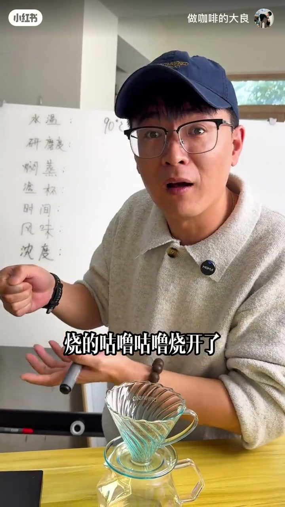
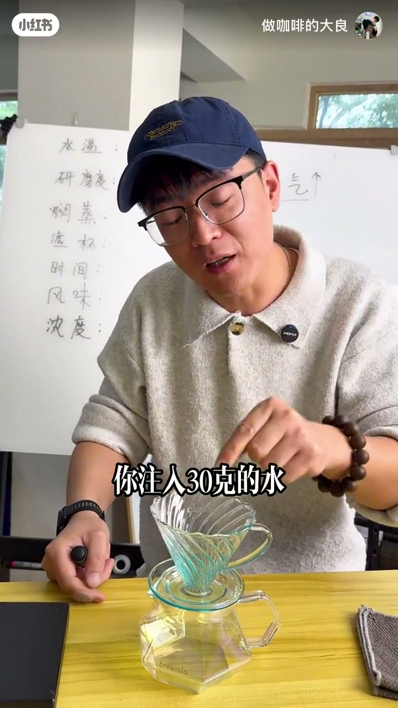
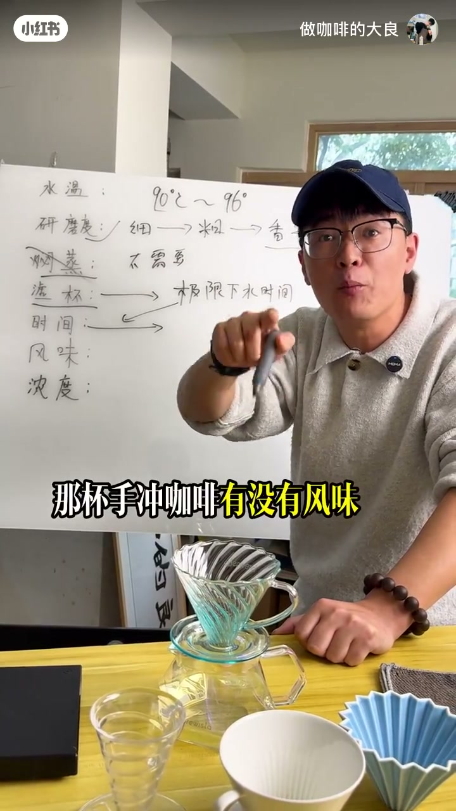
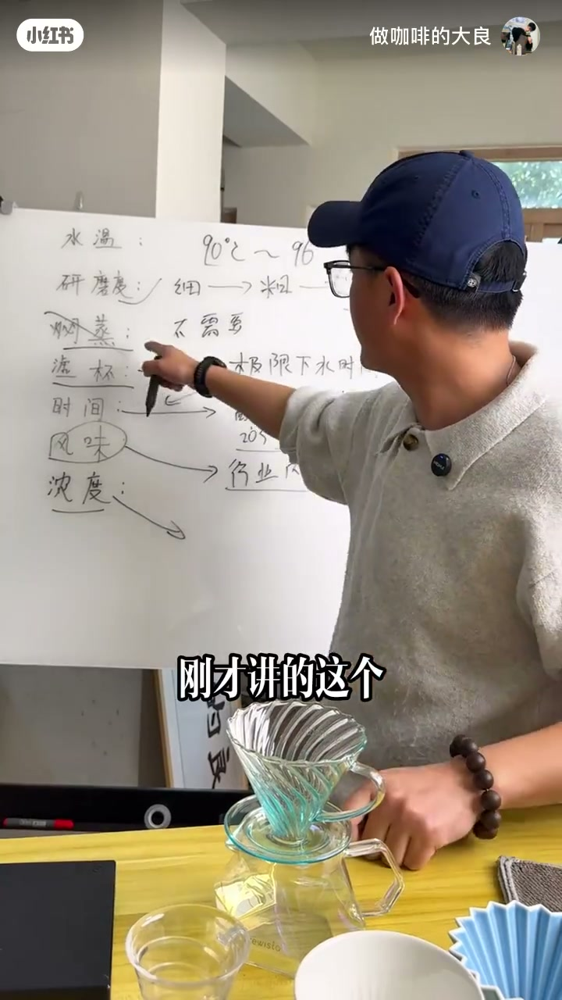
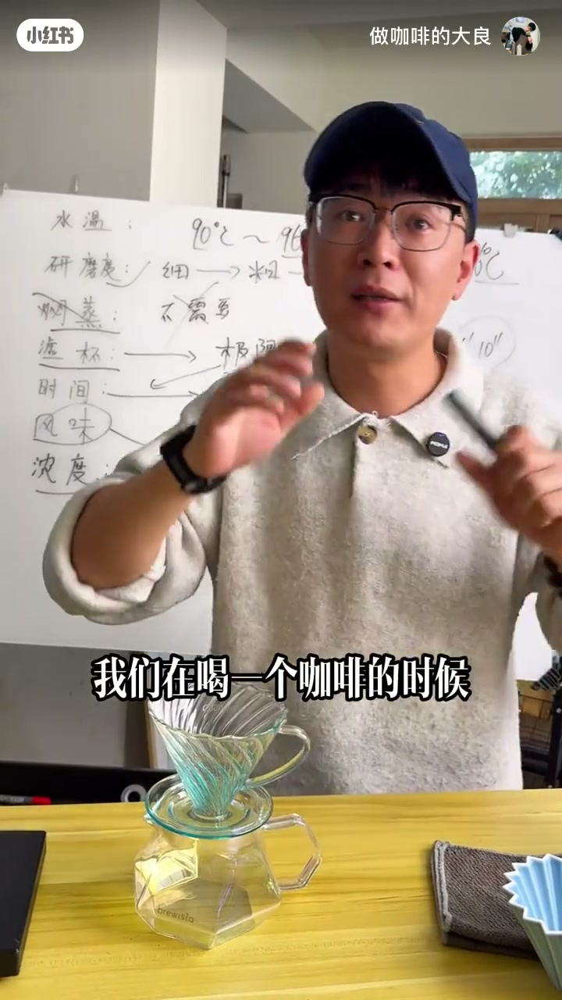
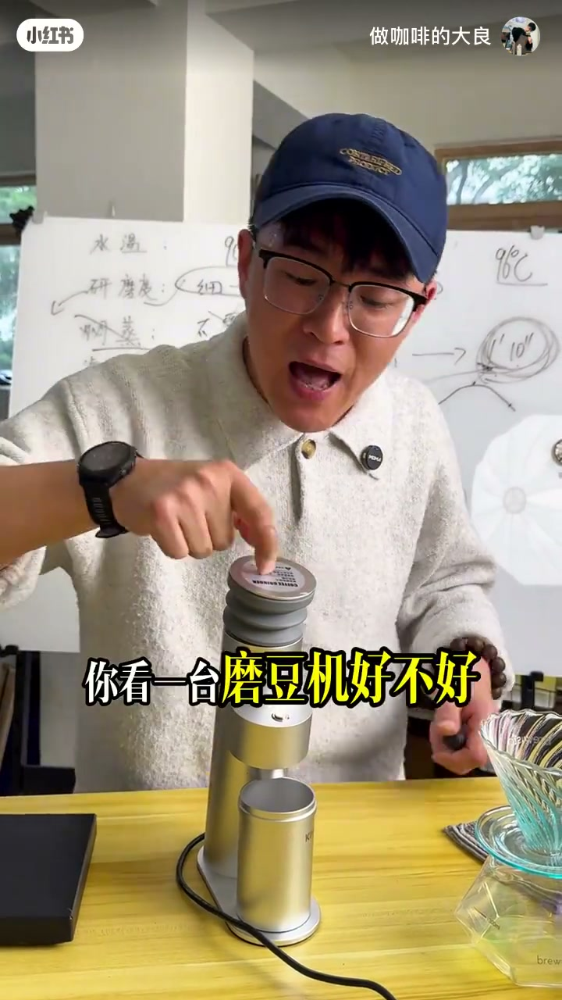
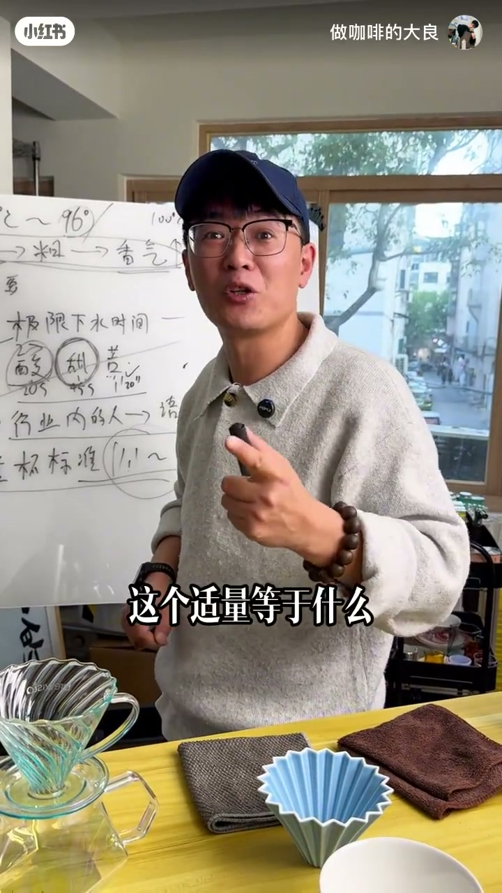
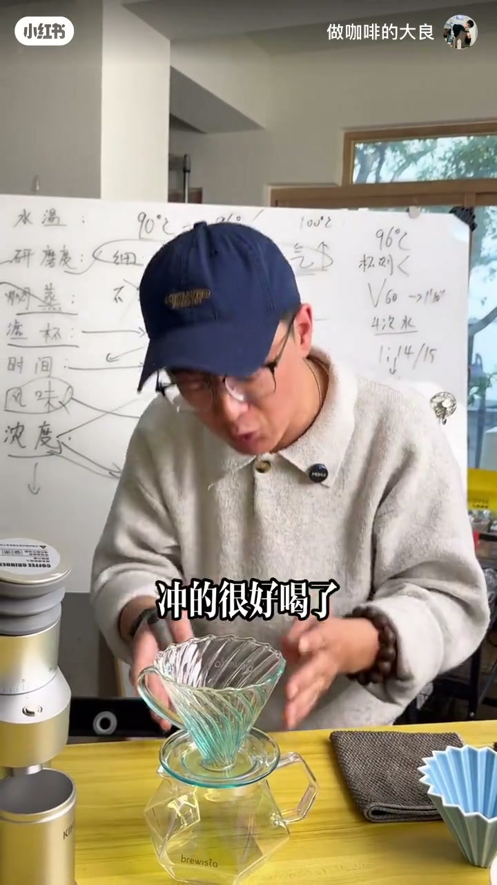

内容要点
作者用约十三年经验，把「手冲方法」拆成可验证的底层逻辑：水温不必迷信某个精确度数（常压下约 90–96℃，100℃ 因气化萃取力反而差）；研磨越粗香气越具象，香气不足先调粗；闷蒸排二氧化碳无法被感官或仪器验完，整段冲煮都在排气，故闷蒸是伪命题；滤杯真正要问的是「极限下水时间」（如 V60 约 1 分 10 秒）——超过则易苦；风味描述是行业沟通语言，对消费者先谈酸甜苦平衡；浓度（作者偏好约 1.1–1.3）排第二重要，用注水次数在极限时间内调节；粉水比按个人口味（示意 1:13–1:15），不是固定口令。片尾用巴拿马翡翠庄园示意推演完整方案：96℃、比杯测研磨略粗、V60、四次注水、1:14→15g×210g≈每次约 65g，并强调对绝大多数人手法几乎无用。
知识结构
水温不那么重要；90–96℃；100℃ 气化萃取力差；地域气压会变。
同牌同刻度仍不同；越粗香气越具象；香气不足调粗。
CO₂ 何时排净无法验证；整段冲煮都在排气。
问商家给数据；决定豆适配与冲煮节奏。
香气看研磨；酸甜苦看时间与杯测。
风味描述给从业者，不是消费者教育话术。
金杯语境；作者喜好约 1.1–1.3，可按口味调。
浅烘好豆 96℃；1′10″ 时限；段数不重要，超时必苦。
先酸再甜再苦；次数提浓度；V60 常三次表象。
比杯测研磨略粗；问厂家杯测度并用筛网验。
1:13–1:15 按口味；15g×1:14=210g÷4≈65g。
90% 人不需要手法；逻辑终极大纲，欢迎讨论。
先问滤杯极限下水时间 → 在时限内用注水次数调浓度（约 1.1–1.3）→ 粉水比按口味 → 研磨比杯测略粗保香气；水温 90–96℃，不必闷蒸，别迷信三段式表象与画圈手法。
立题：水温并不像你以为的那么重要
[00:00 → 01:42]开场：作者称花了约十三年、二十多万学费，今天讲「全网很少人教」的手冲底层逻辑——学会之后，手冲只会越做越好。白板列出七条主线：水温、研磨度、闷蒸、滤杯、时间、风味、浓度。
第一点反直觉：水温一点都不重要——不是完全不管，而是别被「必须 92 还是 93」绑架。常说手冲约 90–96℃；100℃ 可不可以？不可以。水到沸点会气化，分子更想逃离壶口，而不是把可溶物带出来。日式深烘「咕噜开水」冲却不苦，正因 100℃ 萃取能力反而低。浅烘可略高、深烘略低，但仍落在约 90–96℃；同是 92℃，四川盆地与江苏因大气压不同，萃取能力也不一样。所以水温「知道区间」即可，不必神化。

研磨度：只跟香气有关，越粗越具象
[01:42 → 02:44]「粗砂糖」说法对，但要自己试。更关键的纠偏：同一品牌、同一天生产的磨豆机，刻度都拧到 1–2–3，粉的粗细仍可能不一样——像双胞胎也不会完全相同。
研磨度记住只跟香气有关：越粗，香气越具象；越细，香气越没有。磨成面粉级，再好的豆也只剩木质纤维的木头味。香气不足或不具象时，答案是调粗，不是越调越细。
闷蒸：伪命题——你无法知道 CO₂ 何时排净
[02:44 → 03:57]作者断言：世界上做手冲没有闷蒸，闷蒸是伪命题。常见说法是闷蒸排二氧化碳；但他追问：用眼睛、鼻子还是嘴巴告诉你排干净了？注 30g、40g、60g 就能排净吗？没有仪器可验；昨天、今天、后天闷蒸也不可能一样。
整段冲煮都在给粉能量、都在排气——只要最终排干净即可，不必迷信某一注水量的「闷蒸仪式」。网上三段式、四六法、一刀流等，等底层逻辑讲完自然明白：它们是表象，不是唯一真理。世界上没有唯一正确的冲煮方法；只教方法、不教逻辑的人，可以不听。

滤杯第一重要：要的是极限下水时间
[03:57 → 05:47]滤杯形态千奇百怪：单孔、三孔、扇形、折纸、V60……买滤杯只记一点：它是过滤器。问商家一个科学问题——极限下水时间：同样放 15g 粉、注 200g 水，水完全滴滤完要多久？有的 1′10″、1′20″，有的 3 分钟，有的 45 秒。有了这个参数，才知道杯适合什么样的豆。
别只听「下水快/慢」叙事，要准确数据；像买车要知道时速上限。拿到极限下水时间后，按这个时钟来萃取，一刀流、三刀流都会了——因为段数是你对时间的切分方式，核心约束是滤杯时钟。

风味二元：香气看研磨，味觉看时间
[05:47 → 07:18]咖啡风味大致拆成香气与味觉（酸甜苦）。豆的香气只跟研磨度有关——所以「这杯有没有风味」跟你怎么冲手法几乎无关，先跟研磨有关。接下来力气应集中在味觉：酸、甜、苦何时出来。
你可以杯测自己的豆：第几秒酸完、甜完、苦完（示意 20s / 45s / 1′20″）。滤杯给的是「极限萃取时间」像汽车时速；你自己找酸甜苦像开车技术——同样的车，技术不同，酸甜苦节奏也不同。酸甜苦要自己找；极限下水时间必须由滤杯/商家给出。
风味描述：行业第三语言，不是消费者必修课
[07:18 → 08:55]作者郑重声明：凡是动辄对消费者灌风味词的人，在耍流氓——不是说行业撒谎，而是沟通对象错了。类比修咖啡机：用户只需知道加热管坏了、换好能用；买配件才需要型号与材质。
风味是行业内沟通语言：同样训练过的感官，可以说柠檬酸值、白花香、佛手柑尾韵。对消费者说这些，本质是想证明豆好、好卖价钱；把消费者当十年咖啡师来「教育」是错位。风味由研磨度决定；风味语言留给行业。

浓度：第二重要，可按口味调
[08:55 → 09:56]一杯好不好喝，浓度很重要——不是个人随口一说，而是大量实验调查得到的参考（金杯标准语境）。作者个人喜欢的手冲浓度约在 1.1–1.3：入口觉得浓度合适，像炒番茄蛋加多少糖——按口味定。
地区与人有平均标准，但浓一点淡一点可以自己调。浓度排第二重要（滤杯极限时间第一）。至此基础逻辑铺完，进入完整案例。
案例：V60 × 浅烘好豆，96℃ 与 1′10″ 铁律
[09:56 → 12:24]示意：V60 + 巴拿马翡翠庄园级浅烘好豆（生豆很贵）。水温选 96℃——要榨干、不留遗憾；100℃ 才是气化临界，96℃ 在常温常压下萃取力强的区间。不需要闷蒸。
V60 极限下水时间作者直接给：约 1 分 10 秒。粉水接触超过 1′10″，这杯必定偏苦。冲三次都落在 1′10″ 叫三段；冲一次叫一段；冲五次叫五段——段数不重要，你爱冲几段冲几段；但每一次注水到滴尽，都不能超过 1′10″。冲煮时间跟滤杯有关，不是自己随便定。

酸甜苦抛物线，与用注水次数调节浓度
[12:24 → 14:12]好豆贵，往往因甜味物质含量高，酸是复合酸而非单一尖酸。冲完酸与甜仍要一点苦——没有苦就像没有回韵、「绕梁三日」。整体曲线：先酸再甜再苦，酸甜苦平衡才好喝；南北方舌头有差异，但你只需知道「好喝」即可，不必强迫对齐标签风味。
浓度按极限萃取时间来调：同一粉床，注一次滴尽再注第二次，第二次更浓——粉里还有物质可萃。注得越多越浓，但也有极限；浓度仍要落在约 1.1–1.3。V60 按极限时间注水，正常极限大约三次——市面上很多人做三次注水，只学到表象，没说清「三次来自极限时间」。好豆可耐萃，作者会注四次把豆榨干。
研磨怎么找：比杯测研磨度粗一丢丢；用筛网验磨
[14:12 → 15:33]难点是研磨度。买专业磨豆机，问品牌方「杯测研磨度是多少」——不用深究杯测用途，记住手冲（尤其 V60）比杯测研磨再粗一丢丢；只能粗不能更细去追香气。
挑磨：问杯测研磨度 → 买约 25 元杯测筛网 → 按厂家给的度筛一下，对就留、不对就扔。不用先纠结材质话术。作者自嘲像在揭行业底——那就揭。

拼出完整方案：粉水比是「适量的盐」
[15:33 → 17:35]方案汇总：好豆 → 96℃；研磨 ≥ 杯测研磨（厂家给数字，略大或等于即可）；V60 极限约 1′10″；好豆注四次；风味不谈标签，浓度约 1.1–1.3（口述偶作 1.1–1.5）。浓度≈粉水比：巴拿马示意 1:14 / 1:15 / 极限 1:13 都可以——按口味，偏重 1:13、偏轻 1:15。
凡不问你口味就甩一个固定粉水比的人，学的是表象。像炒菜「适量盐」=符合自己口味。作者个人用 1:14：15g 粉 ×14 = 210g 水，分 4 次 ≈ 每次 65g。水温、水量、次数齐了——还需要手法吗？

手法对 90% 的人没用；逻辑才是终极
[17:35 → 19:04]对手冲小白乃至约 90% 爱好者：画圈、椭圆、定点注水几乎没有作用。世界冠军才需要用手法应对现场环境与豆况。滤杯发明者并没有规定你必须某种手法——他想传达的是：用我的杯，按极限时间直接注水（示意四次、每次约 65g）就能好喝。
作者说：我没有教你「手法」，但我告诉你这杯该怎么冲。凡给数据却不问地理/感官/浓厚度的人，是在耍流氓——这叫逻辑。初中物理化学翻一遍就能自验。这套逻辑对他是「终极」大纲，还有更高级内容可讲两三个小时；有不同意见欢迎评论区讨论。
